14 Proteiners veckning
Den som har kokat ett ägg har sett proteiner förändras. Äggvitan är från början en klar, trögflytande vätska. Den består till största delen av vatten och protein. När ägget värms upp blir vitan vit och fast, och den blir aldrig klar igen hur länge den än får svalna. Det som har hänt är att proteinerna har förlorat sin form. De har vecklats upp, och de oveckade kedjorna har fastnat i varandra till en enda stor härva. Att ett protein förlorar sin form kallas denaturering.
I en levande cell händer det motsatta hela tiden. Nya proteinkedjor tillverkas, och var och en viker ihop sig till exakt rätt form, ofta på bråkdelen av en sekund. Att kedjan veckas rätt och inte klumpar ihop sig med andra kedjor är inte självklart. I det här kapitlet ska vi se vilka krafter som styr veckningen, varför proteiner är så sköra och hur de lyckas hålla sig lösta i en cell som är mer packad med protein än en äggvita. I Kapitel 15 ser vi vad som händer när det går fel.
14.1 Från kedja till form
Det här avsnittet handlar om hur en lång kedja av aminosyror får sin form, och varför formen är så viktig. Först en påminnelse om var kedjan kommer ifrån. Som vi såg i Kapitel 1 och Kapitel 3 innehåller DNA instruktionerna för cellens proteiner. Informationen skrivs först av till RNA och läses sedan av i ribosomen, cellens proteinfabrik, som fogar ihop aminosyror en i taget till en lång kedja. Det brukar kallas biologins centrala dogm: från DNA via RNA till protein.
Proteinerna är många och mycket små. Människans arvsmassa innehåller omkring 20 000 gener som beskriver proteiner. Varje celltyp tillverkar många tusen olika proteiner, och ofta mycket många exemplar av varje sort. Ett typiskt protein är bara omkring 5 nanometer stort (en nanometer är en miljondels millimeter). Det betyder att det får plats ungefär 200 000 proteiner i rad på en millimeter.
En nytillverkad proteinkedja är som ett pärlband av aminosyror, utan någon bestämd form. För att kunna göra sitt jobb måste den vika ihop sig till en bestämd tredimensionell form. Det kallas veckning (eng. protein folding). Den färdiga, fungerande formen kallas proteinets nativa struktur. Formen avgör vad proteinet kan göra: vilka molekyler det binder, vilka reaktioner det sätter fart på och vilka andra proteiner det samarbetar med. Först när kedjan har veckats och, för många proteiner, fogats ihop med andra kedjor får den sin funktion.
Formen finns i sekvensen
Hur vet kedjan vilken form den ska ha? Svaret kom på 1950- och 60-talen genom försök av den amerikanske biokemisten Christian Anfinsen (Figur 14.1). Han arbetade med ett renat enzym, ribonukleas, som bryter ned RNA. Enzymets kedja hålls ihop av fyra disulfidbryggor, starka bindningar mellan två svavelatomer i aminosyran cystein. Med urea, ett ämne som får proteiner att veckla upp sig, och merkaptoetanol, som bryter disulfidbryggorna, fick han enzymet att förlora sin form. Det slutade då att fungera. När han sedan försiktigt tog bort kemikalierna veckade sig kedjorna tillbaka av sig själva, bryggorna bildades mellan rätt cysteiner, och enzymet blev aktivt igen.
Slutsatsen var att det inte behövdes någon ritning utöver själva kedjan: informationen om formen finns i ordningen mellan aminosyrorna, i proteinets sekvens (Figur 14.2). Anfinsen fick Nobelpriset i kemi 1972 för upptäckten.
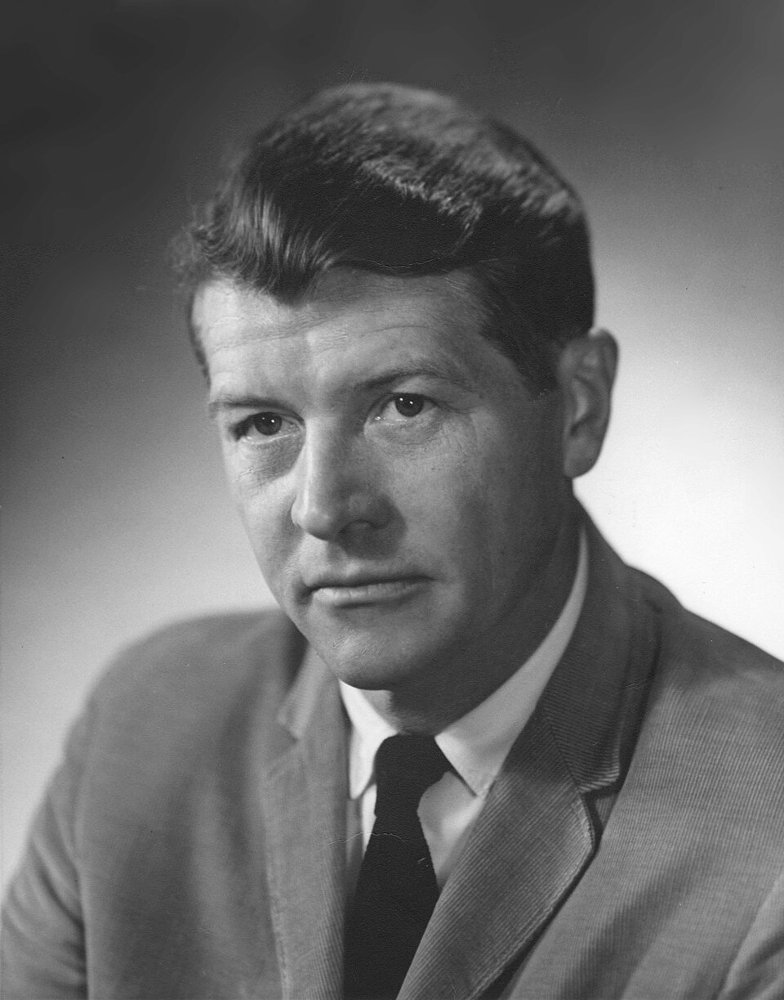
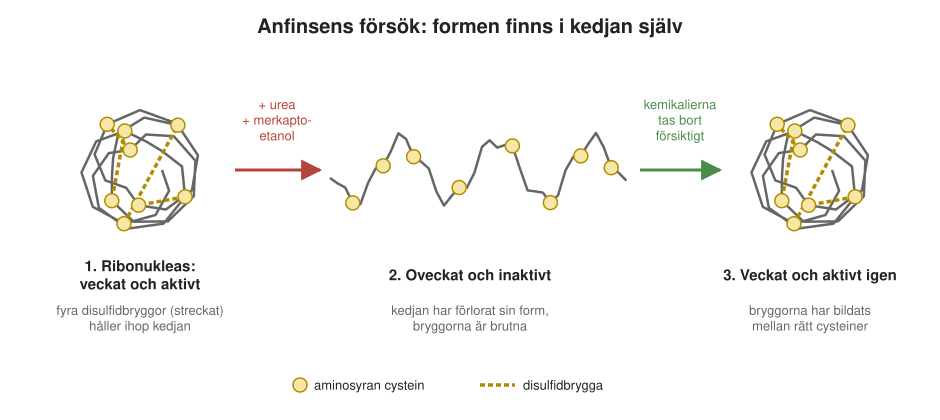
Att formen finns i sekvensen gör att forskare i dag kan förutsäga ett proteins form från dess sekvens med datorprogram, något vi återkommer till i Kapitel 16.
Men om formen finns i sekvensen, hur hittar kedjan den så snabbt? Ett tankeexperiment visar att veckningen är en bedrift. En kedja med hundra aminosyror kan i princip anta ett ofattbart stort antal former. Om kedjan skulle pröva dem en i taget skulle det ta längre tid än universums ålder att hitta rätt. I verkligheten tar det millisekunder till sekunder. Motsägelsen brukar kallas Levinthals paradox, efter den amerikanske molekylärbiologen Cyrus Levinthal, som formulerade den 1969.
Lösningen är att kedjan inte provar allt. Den glider stegvis mot former med allt lägre energi, ungefär som vatten som rinner nedför en sluttning mot en dalbotten. Bilden brukar ritas som en tratt (Figur 14.3).
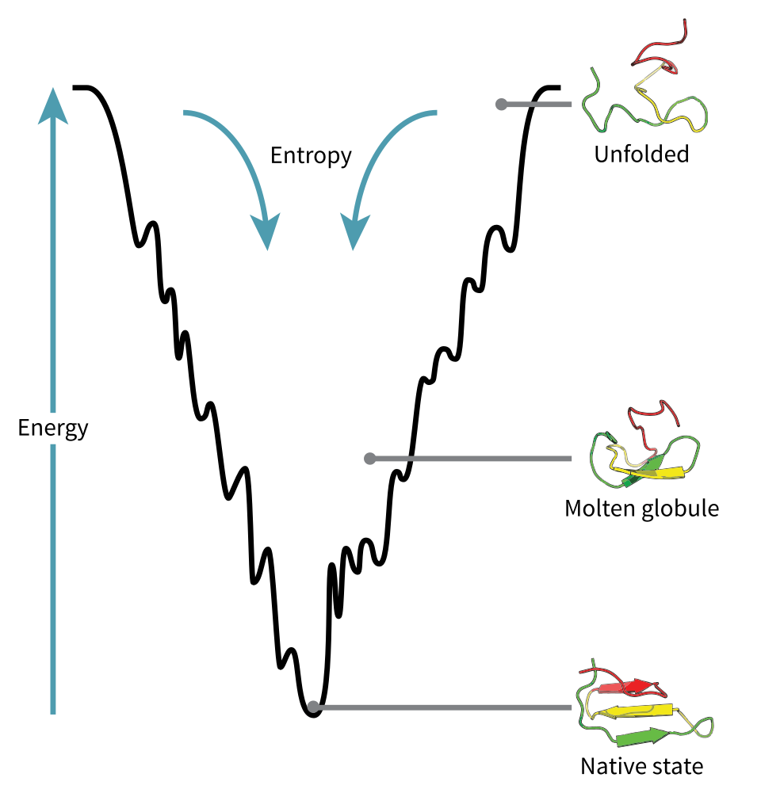
14.2 Fett dras till fett
Vad är det då som driver veckningen? Den viktigaste kraften är densamma som gör att oljedroppar i en soppa flyter ihop till större droppar. För att se varför måste man veta att de tjugo aminosyrorna är olika. Några är vattenälskande (hydrofila): de är laddade eller har grupper som gärna binder till vatten. Andra är vattenskygga (hydrofoba), feta och oljiga, och trivs inte i vatten.
När kedjan veckar sig samlas de vattenskygga aminosyrorna i mitten och bildar en tät, oljig kärna, skyddad från vattnet, precis som oljan i soppan samlas i droppar. De vattenälskande hamnar på ytan, där de har kontakt med vattnet runt omkring (Figur 14.4).
Det finns också en andra regel. En kort sammanfattning av veckningens fysik är: fett dras till fett, och vätebindningarna ska matcha. Med vätebindningar menas svaga bindningar mellan väteatomer och syre- eller kväveatomer. Att de ska matcha betyder att kedjans egna vätebindningar ska para ihop sig med varandra när kedjan veckas. Det sker i regelbundna mönster: spiraler (alfahelixar) och plana flak (betaflak).
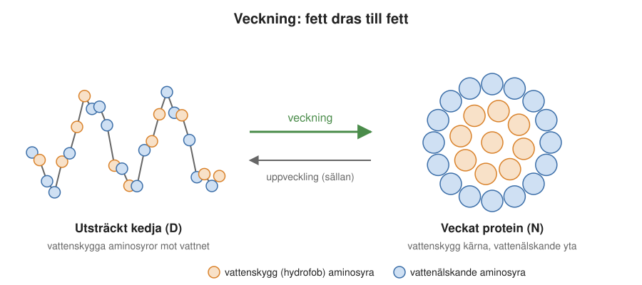
Nätt och jämnt stabilt
Ett veckat protein är inte stelt och evigt. Det hålls ihop av många svaga bindningar, och den sammanlagda vinsten med att vara veckad är förvånansvärt liten. Proteinkedjan pendlar därför fram och tillbaka mellan veckat tillstånd, som brukar betecknas N (av eng. native), och oveckat (denaturerat) tillstånd, D (av eng. denatured). Det är en jämvikt, precis som en kemisk reaktion som kan gå åt båda hållen: hela tiden vecklas några molekyler upp medan andra veckas ihop igen.
Proteinets stabilitet beskriver hur förskjuten jämvikten är, det vill säga hur många molekyler som är veckade för varje molekyl som är oveckad. För ett typiskt protein är bara en mycket liten andel oveckad i varje ögonblick, ofta en på många tusen eller miljoner. Men andelen är aldrig noll, och den ändras lätt. Värme skjuter jämvikten mot det oveckade tillståndet, vilket är vad som händer i det kokta ägget. En enda förändrad aminosyra, en mutation, kan också göra ett protein mindre stabilt så att en större andel av molekylerna är oveckade.
Varför har evolutionen inte gjort proteinerna stabilare? En förklaring är att proteinerna behöver vara rörliga för att fungera; ett enzym måste kunna ändra form lite när det arbetar. En annan är att det inte finns något evolutionärt tryck mot mer stabilitet än vad som behövs: så länge proteinet klarar sitt jobb under organismens livstid finns det ingen fördel med att vara stabilare. Resultatet är att de flesta proteiner balanserar på gränsen. Det är viktigt, eftersom det är de oveckade molekylerna som kan ställa till problem. Hur det går till är ämnet för nästa avsnitt, och för Kapitel 15.
Veckning och klumpning: samma krafter
De krafter som får en kedja att vecka sig kan också få kedjor att fastna i varandra. När ett protein är oveckat ligger dess vattenskygga delar öppna mot vattnet. Då kan de lika gärna dra sig mot de vattenskygga delarna på en annan oveckad kedja som mot sina egna. Resultatet blir då inte ett veckat protein, utan en klump av flera kedjor, ett aggregat.
Veckning och aggregering, att kedjor klumpar ihop sig till aggregat, är två sidor av samma fenomen. Klumparna behöver inte vara oordnade. Samma krafter kan under rätt förutsättningar bygga upp långa, regelbundna strukturer, ungefär som när vattenmolekyler ordnar sig till iskristaller på en fönsterruta en kall morgon. På samma sätt kan proteiner bilda kristaller i ett provrör (Figur 14.5), och ibland långa, tunna fibrer. Det är sådana fibrer som byggs upp vid sjukdomar som Alzheimers och ALS (Kapitel 15).
Eftersom en liten andel av kedjorna alltid är oveckad, har cellen ett eget skyddssystem mot felveckning: chaperoner (eng. chaperones), hjälpproteiner som tar hand om felveckade kedjor och hjälper dem att vecka sig rätt, eller ser till att de bryts ned. De beskrivs närmare i Kapitel 13.
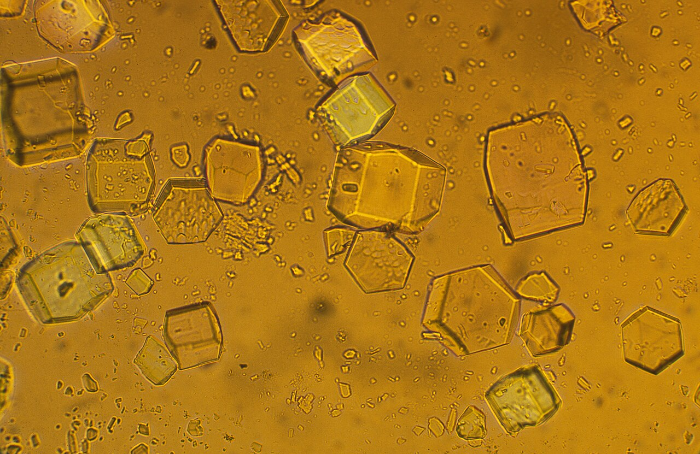
14.3 Ett exempel: SOD1
Ett enskilt protein kan visa vilka delar av ett protein som är viktiga och vilka som får variera. Vi använder ett protein som återkommer i både det här och nästa kapitel: SOD1, eller koppar-zink-superoxiddismutas (Figur 14.6). Det är ett enzym som skyddar cellen mot syreradikaler. När cellen använder syre för att utvinna energi ur maten bildas av misstag små mängder superoxid, en syremolekyl med en extra elektron. Superoxid är mycket reaktiv och kan skada DNA, proteiner och membran. SOD1 omvandlar superoxid till syre och väteperoxid, som andra enzymer sedan bryter ned till vatten. Därför kallas SOD1 ibland en “radikalätare”.
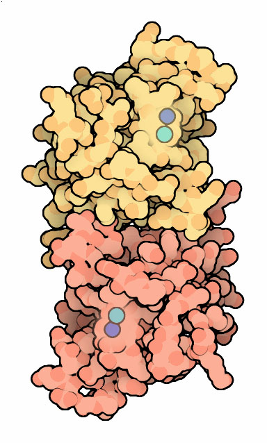
Varje SOD1-kedja består av 153 aminosyror, och två kedjor sitter ihop till ett par. SOD1 finns hos många arter, från svampar till människor. Om man jämför dem och undersöker vilka aminosyror som är lika och vilka som skiljer sig, ser man ett tydligt mönster:
- De aminosyror som binder metallerna är helt konserverade, det vill säga desamma hos alla arter. Det är framför allt aminosyran histidin, som griper tag i koppar- och zinkjonerna. Utan dem fungerar inte enzymet, och varje förändring har tydligen sorterats bort av det naturliga urvalet.
- De vattenskygga aminosyrorna i kärnan är ganska konserverade. De kan bytas mot andra vattenskygga aminosyror, men kärnan måste förbli oljig för att proteinet ska vecka sig.
- De vattenälskande aminosyrorna på ytan är okonserverade. De skiljer sig mycket mellan arterna och verkar vara fria att variera.
Konserverade aminosyror är på så sätt ett fingeravtryck. De visar vilka delar av ett protein som är viktiga för dess uppgift, och de kan användas för att känna igen proteiner med samma funktion i olika organismer.
Skillnaderna mellan arterna berättar dessutom om släktskap: ju fler skillnader, desto längre sedan arterna hade en gemensam förfader. Det är samma tanke som Charles Darwin skissade i sin anteckningsbok 1837, med orden “I think” ovanför ett förgrenat släktträd (Figur 14.7). I dag kan släktträd byggas från proteinsekvenser.
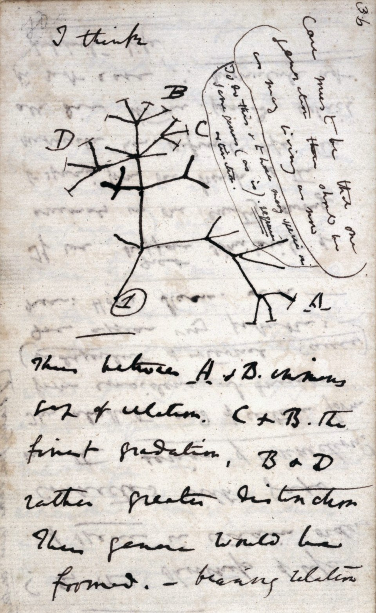
Men frågan som det här kapitlet kretsar kring är en annan. Det mesta av ett proteins yta är “okonserverat”. Betyder det att ytan saknar betydelse? För att svara på det måste vi först titta på hur det ser ut där proteinerna lever: inuti cellen.
14.4 Cellen: trångt och livligt
Proteinernas miljö är cellen, och den är både liten och mycket trång. Det är trängseln som gör proteinernas yta viktig.
Celler är små. En bakterie är oftast en eller ett par mikrometer lång (en mikrometer är en tusendels millimeter), så att flera hundra bakterier får plats i rad på en millimeter. Våra egna celler är tio till hundra gånger större. Det finns också jätteceller: gulan i ett strutsägg är en enda cell. Den eukaryota cellen, alltså en cell med cellkärna som våra egna, kan liknas vid en påse som är fylld med mindre, ihopknycklade påsar, nämligen cellkärnan, mitokondrierna och de andra membranomslutna utrymmena (Kapitel 2).
Inuti påsarna är det trångt. I en bakterie som E. coli finns 300–400 milligram protein per milliliter, ungefär lika tjockt som en fruktyoghurt (Kapitel 13). Det är tre till fyra gånger så mycket som i en äggvita. Avståndet mellan två proteiners mittpunkter är i genomsnitt bara omkring 6 nanometer. Mellan deras ytor återstår då bara ett par nanometer. Proteinerna stöter därför hela tiden i varandra. Goodsells målning av en bakterie i Kapitel 2 ger en bra känsla för hur tätt det är.
Man kan se på en cell på två sätt. Det ena är den bild som en lärobok eller ett läkemedelsbolag ofta har: en karta över tusentals bestämda kemiska reaktioner, där varje reaktion sköts av ett särskilt enzym och där varje protein har sin bestämda partner, som i en fabrik där varje maskin har sin plats. Ett läkemedel ska då träffa ett utvalt protein i kartan. Den bilden visar sällan trängseln. I populära animationer, som filmen The Inner Life of the Cell (Avsnitt 7.9), går till exempel motorproteinet kinesin längs cellens skelett och bär last genom en nästan tom cell.
Den andra bilden är lika sann: cellen är en trängsel där allt hela tiden knuffas och rör sig slumpvis, helt “fullknökad”, som i Goodsells målning. Varje protein måste, mitt i trängseln, hitta just sina partner bland tusentals andra sorters molekyler utan att fastna i alla de andra. Det är i den bilden som proteinets yta blir viktig.
14.5 Ytan: den bortglömda delen
Nu kan vi återvända till frågan om proteinets yta. Det som gör ytan viktig i cellens trängsel är framför allt dess elektriska laddningar.
En stor del av aminosyrorna på ett proteins yta är laddade. Några är positiva och några negativa. Laddningar fungerar ungefär som magneter: lika laddningar stöter bort varandra, och olika laddningar drar till sig varandra. Summan av alla laddningar kallas proteinets nettoladdning. SOD1 har till exempel 38 negativa och 28 positiva laddningar på sin yta, vilket ger en nettoladdning på minus 10.
Ser man på cellen som helhet framträder en grundprincip: nästan allt inuti cellen är negativt laddat (Figur 14.8). Membranens insida, som vetter mot cellens inre, är negativt laddad, DNA och RNA är kraftigt negativa, och de flesta proteiner har en negativ nettoladdning. Eftersom allt är negativt stöter allt bort allt annat lite grand. Den ömsesidiga repulsionen hindrar proteinerna från att klumpa ihop sig, och den håller cellens innehåll i lösning.
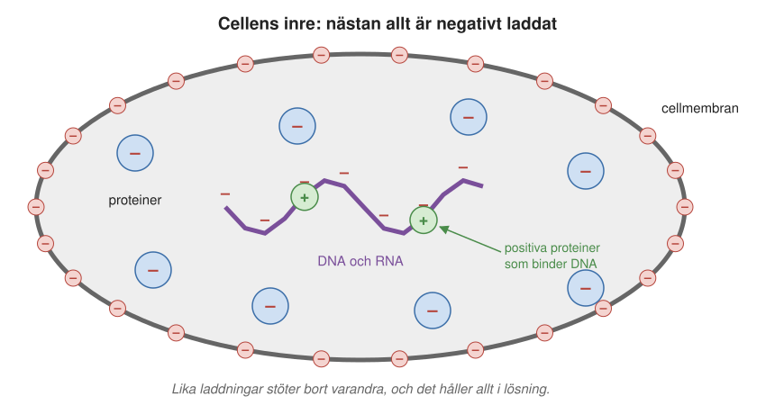
Det finns ett viktigt undantag. Proteiner som ska binda till DNA eller RNA är ofta positivt laddade, så att de dras till de negativa nukleinsyrorna. Hit hör till exempel de proteiner som DNA lindas kring i cellkärnan och många av ribosomens proteiner. Undantaget visar att laddningen inte är slumpmässig, utan anpassad efter var proteinet ska vara.
Det ger svaret på frågan från förra avsnittet. Proteinets yta är inte betydelselös, även om enskilda aminosyror får variera. Det som spelar roll är inte vilken exakt aminosyra som sitter var, utan ytans samlade egenskaper: hur laddad den är och hur vattenälskande den är.
Ytans laddning har också betydelse för sjukdom. Bland de mutationer i SOD1 som ger den ärftliga formen av ALS finns påfallande många som minskar proteinets negativa nettoladdning. Redan en enda laddning mindre kan göra skillnad. Vi återkommer till det i Kapitel 15.
14.6 Ett mänskligt protein i en bakterie
Hur känner ett protein av sin omgivning, och vad händer om det flyttas till en främmande cell? Det har Mikael Olivebergs forskargrupp undersökt med ett elegant försök. Tanken var att jämföra proteiner som har samma uppgift men kommer från helt olika organismer. Båda är små proteiner som binder och transporterar koppar: det ena kommer från en värmeälskande bakterie (Thermus thermophilus), det andra från människa. För att bara studera ytans betydelse tog man bort den del som binder koppar. Som ett tredje testprotein användes en “naken” variant av SOD1, där bara proteinets grundstomme fanns kvar.
Proteinerna fick sedan tillverkas inuti levande celler, både bakterieceller och mänskliga celler. Med en teknik som kallas NMR (kärnmagnetisk resonans, samma fysik som i sjukhusens magnetkameror, se Avsnitt 6.10.3) kan man mäta hur fritt ett protein roterar inne i cellen. Ett protein som snurrar fritt ger skarpa signaler. Ett protein som fastnar på andra molekyler roterar långsamt, och då suddas signalerna ut.
Resultatet i bakterien E. coli var tydligt:
- Bakterieproteinet rörde sig relativt fritt.
- Det mänskliga proteinet “fastnade”. Det trivdes inte i bakterien.
- När en enda aminosyra på ytan av det mänskliga proteinet byttes ut, en positivt laddad aminosyra (lysin) mot en negativt laddad (glutamat) på samma plats som bakterieproteinet har en negativ, började det mänskliga proteinet röra sig nästan lika fritt som bakterieproteinet.
En enda laddning på ytan räckte alltså för att ändra hur proteinet trivdes i cellen. När man gjorde samma sak med många varianter av proteinerna, med olika laddningar och olika mycket vattenälskande ytor, framträdde en sorts fysikalisk-kemisk kod för hur rörligt ett protein är inne i en cell. Ju mer negativt laddad och ju mer vattenälskande ytan var, desto friare rörde sig proteinet. Slutsatserna kan sammanfattas så här:
- Ett protein rör sig “bäst” i den sorts cell där det har utvecklats. Men det kan lätt anpassas till en ny miljö med en eller några få mutationer på ytan.
- Det verkar finnas en optimal rörlighet som cellen strävar efter: inte för klibbig, men inte heller helt oberörd av omgivningen.
14.7 Lagom klibbiga
Varför skulle cellen vilja att proteinerna är just lagom klibbiga? Tänk på hur ett protein hittar sin partner. Om det bara studsade runt tills det råkade träffa partnern med exakt rätt sida först, skulle det ta lång tid. I stället bildar två proteiner ofta ett kortlivat möte (eng. transient encounter). De stannar ihop en kort stund och glider runt på varandras ytor, ungefär som när man trevar efter en strömbrytare i mörkret. Om de passar ihop hittar de rätt läge och binder fast. Om inte, släpper de och fortsätter.
Vad är det som gör ett protein lagom klibbigt? Två krafter verkar mellan proteinerna (Figur 14.9). Den ena är den elektriska repulsionen mellan lika laddningar, som når en bit ut från proteinet och håller proteinerna isär. Den andra är svaga attraktionskrafter som bara verkar på mycket korta avstånd, mindre än en halv nanometer, när ytorna nästan rör vid varandra. Där verkar också de specifika kontakter som avgör om två proteiner passar ihop.
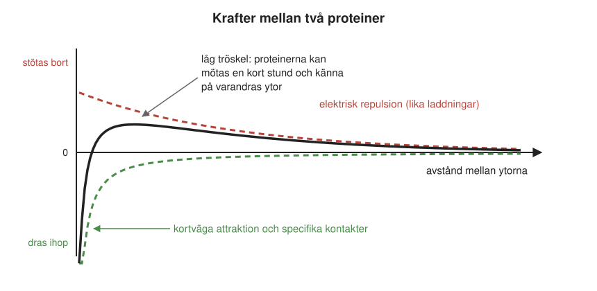
För att komma riktigt nära varandra måste två proteiner först ta sig förbi den svaga repulsionen. Tillsammans ger de två krafterna därför en låg tröskel. Proteinerna är lösta, men bara nätt och jämnt, på samma sätt som deras veckade form bara är nätt och jämnt stabil (Avsnitt 14.2.1). Fysiker kallar det marginell kolloidal stabilitet. En kolloid är en vätska med små partiklar som svävar fritt utan att sjunka eller klumpa ihop sig. Mjölk är ett vardagsexempel.
Att stabiliteten är marginell har en stor fördel: proteinerna kan utan större kostnad komma nära varandra och “känna på” varandras ytor. Därmed blir ytans detaljerade sammansättning avgörande för vilka möten som leder till bindning. Samtidigt betyder det att små förändringar av ytan, som en enda mutation, kan tippa balansen åt ett klibbigare håll.
14.8 Proteinytor berättar om livets historia
Om proteinernas ytor är anpassade till cellen de lever i, borde man kunna se spår av det när man jämför olika organismer. I dag finns arvsmassan för tusentals arter kartlagd. För varje art kan man räkna fram två enkla egenskaper för alla dess proteiner: deras genomsnittliga storlek och deras genomsnittliga laddning per ytenhet.
När varje organism placeras som en punkt i ett diagram med de två egenskaperna på axlarna sorterar sig livet i tydliga grupper. Livets tre stora grenar hamnar i olika områden: bakterierna, eukaryoterna och arkéerna, som liknar bakterier till utseendet men är en egen gren av livet. Eukaryoterna har i genomsnitt större proteiner. Några grupper sticker ut särskilt:
- Salttåliga arkéer som lever i nästan mättad saltlösning har ovanligt starkt negativt laddade proteiner. Vi återkommer till dem i slutet av kapitlet.
- Bakterier med positivt laddade proteiner är ofta bakterier som lever inuti andra organismers celler, till exempel i insekter som cikador och bladlöss. De har små arvsmassor med en stor andel proteiner som binder DNA och RNA, och sådana proteiner är, som vi såg, ofta positivt laddade. På det sättet påminner de om mitokondrierna, som en gång var fritt levande bakterier.
- Bland eukaryoterna har malariaparasiten ovanligt stora proteiner.
- En tidigare okänd grupp arkéer, som bara är känd från DNA i miljöprover insamlade runt om i världen, bildar en egen “mystisk” grupp. Vi återkommer också till den.
Mönstret syns också på finare nivåer, inom stammar och klasser. Två enkla siffror räcker därmed för att säga något om en organisms släktskap och om vilken miljö den lever i.
14.9 Hur fysiologisk är “fysiologisk” koksaltlösning?
Proteinernas laddningar och salthalten runt dem har praktisk betydelse för hur forskare gör sina försök. Det mesta vi vet om proteiner kommer från försök i provrör. Sedan prövas resultaten i celler, och till sist i hela organismer, till exempel i möss som bär på en mänsklig ALS-mutation (Kapitel 15). Men beter sig ett protein likadant i alla tre miljöerna?
I provröret löser forskare oftast sina proteiner i så kallad fysiologisk koksaltlösning, 0,9 procent koksalt i vatten. Det är samma lösning som används i dropp på sjukhus, och den har samma salthalt som blodet. Den innehåller lika mycket positiva natriumjoner som negativa kloridjoner.
Joner i en lösning skärmar av elektriska krafter. Runt varje laddat protein samlas joner med motsatt laddning, som en dämpande dimma. Ju mer salt det finns, desto tätare blir dimman, och desto kortare blir den sträcka som laddningarna verkar över. I fysiologisk koksaltlösning når laddningarna bara knappt en nanometer.
Inuti en cell är det annorlunda. Cellen innehåller ungefär lika mycket positiva joner som blodet, framför allt kalium. Men den har få fria kloridjoner. En stor del av de negativa motparterna är i stället laddningar som sitter fast på proteinerna, på DNA och RNA och på membranen, och de dämpar inte de elektriska krafterna lika mycket som fria joner. Därför når de elektriska krafterna ungefär dubbelt så långt i en bakteriecell, drygt två nanometer, som i fysiologisk koksaltlösning (Figur 14.10).
Skillnaden är viktig, eftersom det som vi såg bara är ett par nanometer mellan grannproteinernas ytor i cellen. I cellen når varje proteins laddningar därför precis fram till grannarna. I fysiologisk koksaltlösning gör de det inte. “Fysiologisk” koksaltlösning är med andra ord inte så fysiologisk när det gäller hur proteiner känner av varandra.
Det har betydelse också för läkemedel. Ett ämne som binder bra till sitt målprotein i ett provrör med koksaltlösning kan bete sig annorlunda i cellens trängsel, där laddningarna når längre.
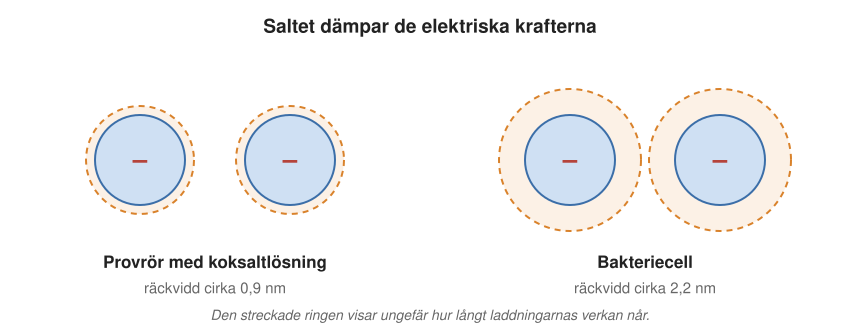
Ett exempel från andningskedjan
Hur långt de elektriska krafterna når kan avgöra hur proteiner samarbetar. Ett exempel är andningskedjan i mitokondrierna, som vi mötte i Kapitel 2 och Kapitel 9. Där bär ett litet protein, cytokrom c, elektroner mellan två stora proteinkomplex. Försök med mitokondrier från jäst tyder på att cytokrom c inte alltid simmar fritt mellan komplexen. I stället kan det glida längs ytan på de sammansatta komplexen, som på en räls, hållet på plats av svaga elektriska krafter.
Rälsen fungerar bara om krafterna når tillräckligt långt. När forskarna mätte hur snabbt elektronerna fördes vidare syntes “rälsen” bara när de elektriska krafterna fick nå ungefär lika långt som i en cell, omkring två nanometer. Då ökade hastigheten brant när det fanns tillräckligt med cytokrom c. Vid en salthalt som i fysiologisk koksaltlösning, där krafterna bara når knappt en nanometer, försvann effekten.
14.10 Livet i mättad saltlösning
Det finns organismer som lever på gränsen till det omöjliga. I saltdammar, saltsjöar och vid saltutvinning vid havet kan vattnet bli så salt att saltet börjar falla ut som kristaller. Där lever halofiler (av grekiskans “salt” och “vän”), framför allt arkéer som Halobacterium salinarum (Figur 14.12), som vi mötte i Avsnitt 8.2, och den märkliga, fyrkantiga Haloquadratum walsbyi. De färgar ofta vattnet rosa eller rött (Figur 14.11). Inne i cellerna har de lika hög salthalt som utanför, men med kalium i stället för natrium.
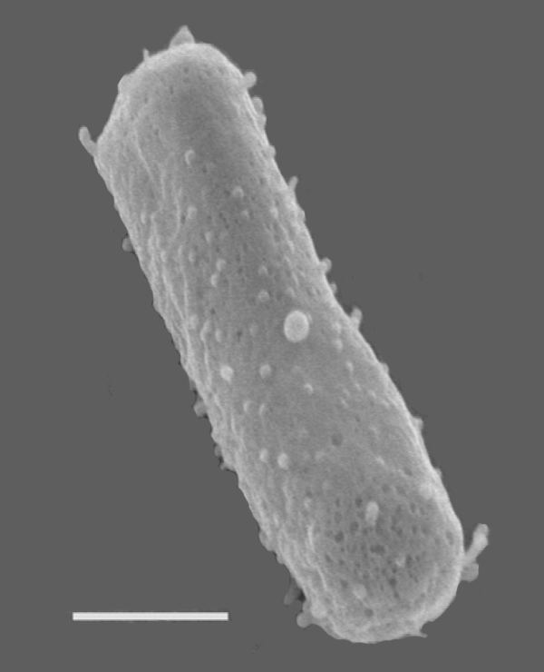
Halofilerna är en gåta för teorin om hur salt skärmar av laddningar. Som vi såg blir de elektriska krafternas räckvidd kortare ju mer salt det finns. Vid så höga salthalter borde krafterna vara helt utsläckta, och då skulle proteinerna inte längre stöta bort varandra. Ändå har halofilernas proteiner, som vi såg, extremt många negativa laddningar.
Hur halofilerna klarar sig är än så länge en öppen fråga. De visar hur långt man kan komma från en så enkel fråga som hur ett protein känner av sin omgivning.
14.11 Sammanfattning
- En proteinkedja veckar sig av sig själv till en bestämd form. Formen bestäms av ordningen mellan aminosyrorna, och formen avgör vad proteinet kan göra.
- Den viktigaste drivkraften är att “fett dras till fett”: de vattenskygga aminosyrorna samlas i en kärna, och de vattenälskande hamnar på ytan.
- Ett protein är bara nätt och jämnt stabilt. Det pendlar mellan veckat och oveckat tillstånd, och värme eller en mutation kan förskjuta balansen. Samma krafter som ger veckning kan också få kedjor att klumpa ihop sig.
- Aminosyror som är viktiga för funktionen, som de som binder metaller i SOD1, är konserverade mellan arter. Ytan varierar mer, men dess samlade laddning är viktig.
- Inuti cellen är det mycket trångt, och nästan allt är negativt laddat. Den ömsesidiga repulsionen håller proteinerna lösta. Proteinerna är lagom klibbiga, så att de kan mötas kort och hitta rätt partner.
- Ett protein trivs bäst i den cell där det utvecklats, men en enda mutation på ytan kan räcka för att anpassa det till en ny cell.
- Salt dämpar elektriska krafter. I cellen når krafterna ungefär dubbelt så långt som i fysiologisk koksaltlösning, och salttåliga arkéer visar att det finns mycket kvar att förstå.
14.12 Nyckelbegrepp
- veckning – Den process där en nytillverkad proteinkedja viker ihop sig till sin bestämda tredimensionella form (eng. protein folding).
- nativ struktur – Ett proteins färdiga, fungerande form.
- hydrofob – Vattenskygg. Hydrofoba aminosyror samlas i proteinets inre när kedjan veckar sig.
- hydrofil – Vattenälskande. Hydrofila aminosyror är ofta laddade och hamnar på proteinets yta.
- proteinets stabilitet – Ett mått på hur förskjuten jämvikten mellan veckat (N) och oveckat (D) tillstånd är, det vill säga hur många molekyler som är veckade för varje oveckad.
- Levinthals paradox – Motsägelsen att en proteinkedja i princip kan anta så många former att det skulle ta längre tid än universums ålder att pröva alla, medan den i verkligheten veckar sig på millisekunder till sekunder. Kedjan provar inte allt utan glider stegvis mot allt bättre former.
- ribonukleas – Enzym som bryter ned RNA. Christian Anfinsen använde det för att visa att ett protein kan vecka sig tillbaka av sig självt, eftersom formen bestäms av sekvensen.
- denaturering – När ett protein förlorar sin veckade form, till exempel av värme. Äggvitan som stelnar när ägget kokas är ett exempel.
- aggregat – En klump av flera proteinkedjor som fastnat i varandra, ofta för att deras vattenskygga delar legat öppna.
- konserverad aminosyra – En aminosyra som är densamma i ett protein hos många olika arter. Konserverade aminosyror är ofta viktiga för proteinets funktion.
- SOD1 – Koppar-zink-superoxiddismutas, ett enzym som oskadliggör syreradikalen superoxid. Mutationer i SOD1 kan ge den ärftliga formen av ALS.
- superoxid – En syremolekyl med en extra elektron. Den är mycket reaktiv och kan skada cellens molekyler.
- nettoladdning – Summan av ett proteins positiva och negativa laddningar. De flesta proteiner i en cell har negativ nettoladdning.
- kortlivat möte – När två proteiner stannar ihop en kort stund och känner på varandras ytor, innan de antingen binder fast eller släpper (eng. transient encounter).
- marginell kolloidal stabilitet – Att proteinerna i en cell är lösta, men bara nätt och jämnt, så att de lätt kan mötas en kort stund utan att klumpa ihop sig.
- skärmning – Att joner i en lösning dämpar elektriska krafter. Ju mer salt, desto kortare räckvidd får laddningarna.
- fysiologisk koksaltlösning – En lösning med 0,9 procent koksalt, med samma salthalt som blodet. Används ofta i provrörsförsök, men liknar inte cellens inre.
- NMR – Kärnmagnetisk resonans, en mätmetod som bygger på samma fysik som magnetkameran. Kan bland annat visa hur fritt ett protein roterar inne i en levande cell.
- halofil – En organism som lever i mycket salta miljöer, till exempel arkén Halobacterium salinarum.
14.13 Testa dig själv
Flervalsfrågor
Välj ett svar och tryck på Rätta. Svarsalternativen visas i ny ordning varje gång.
Fundera vidare
14.1 Förklara varför äggvitan stelnar när ett ägg kokas, och varför den inte blir klar igen när den svalnar.
14.2 Ytan på ett protein är okonserverad mellan arter. Betyder det att ytan inte spelar någon roll? Använd kapitlets exempel.
14.3 Varför kan resultat från försök i provrör skilja sig från vad som händer i en levande cell?
14.4 Hur kan två enkla egenskaper hos en organisms proteiner säga något om dess släktskap och livsmiljö?
Hjälp oss att förbättra kapitlet
Hittade du ett fel, eller något som var svårt att förstå? Skicka ett förslag i förslagsformuläret (kräver inloggning med SU-konto). Lärarna läser alla förslag inför nästa version av boken.
14.14 Läs mer
- Proteinveckning på svenska Wikipedia och den mer utförliga Protein folding på engelska Wikipedia.
- Superoxide Dismutase, Molecule of the Month på PDB-101 (på engelska), om SOD1 och dess släktingar.
- Nobelpriset i kemi 1972, bland annat till Christian Anfinsen för upptäckten att proteinets form bestäms av dess sekvens (på engelska).
- Macromolecular crowding på engelska Wikipedia, om trängseln i cellen.
- Halophile på engelska Wikipedia, om organismer som lever i mycket salta miljöer.